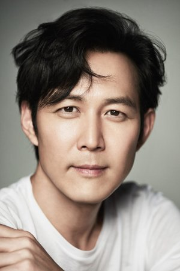
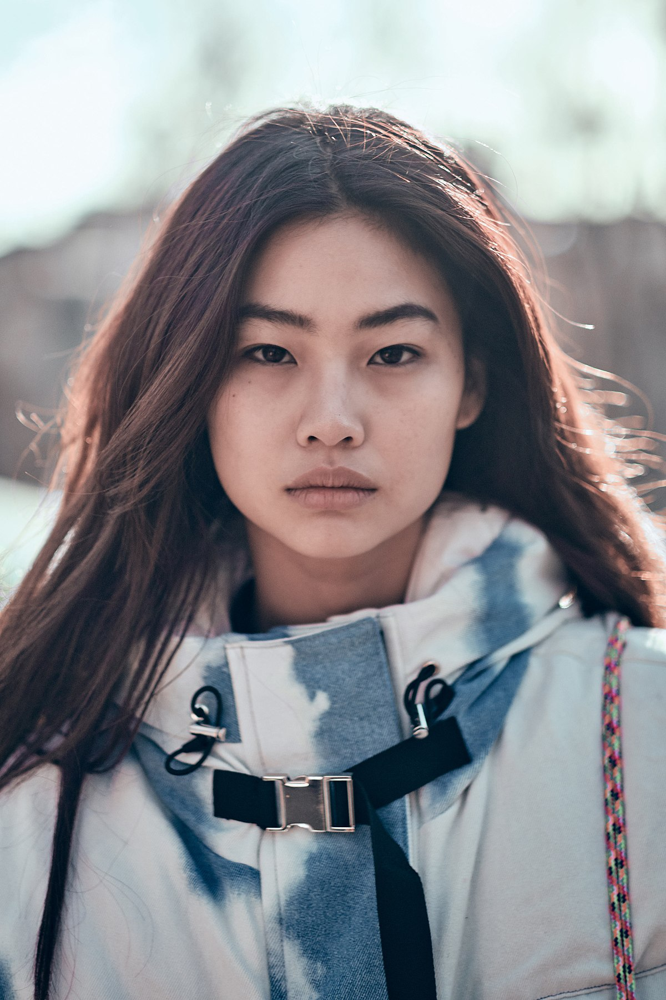
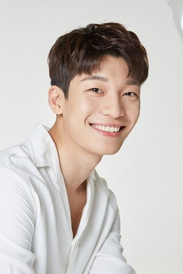

Нажмите, чтобы зарегестрироваться.
«Игра в кальмара» 오징어게임 — южнокорейский игры в жанре выживания. В игре принимает группа людей, которые из-за нужды в деньгах принимают приглашение об участии в тайной игре на выживание.
Победитель получит 45,6 млрд вон (38,5 млн долларов США). Однако ставки в игре смертельно высоки.
Игроки, которые выиграли в прошлых играх.
 456 ЛИ ЧЖОН ДЖЭ, LEE JEONG-JAE, 이정재. Южнокорейский актер, модель. Родился 15 марта 1973 года в Сеуле (Южная Корея).
 067 ЧОН ХО ЁН, JUNG HOYEON, 정호연. Южнокорейская актриса, модель. Родилась 23 июня 1994 года в Сеуле (Южная Корея).
 ВИ ХА ДЖУН, WI HA-JOON, 위하준. Южнокорейский актер. Родился 5 августа 1991 года в Соанмене (провинция Южная Чолла, Южная Корея).